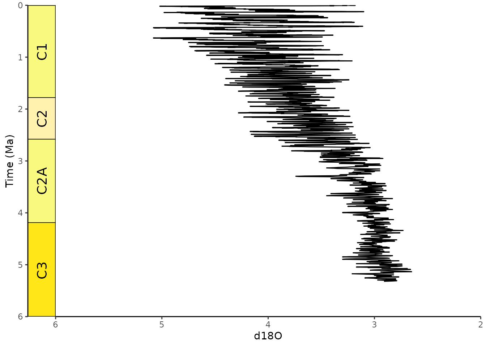
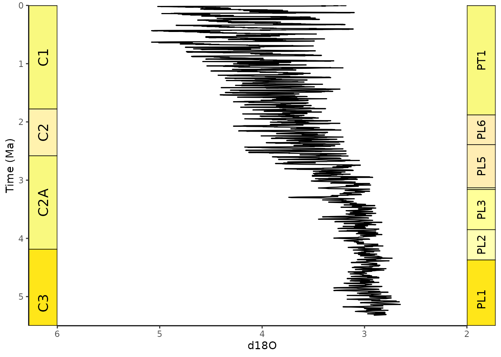
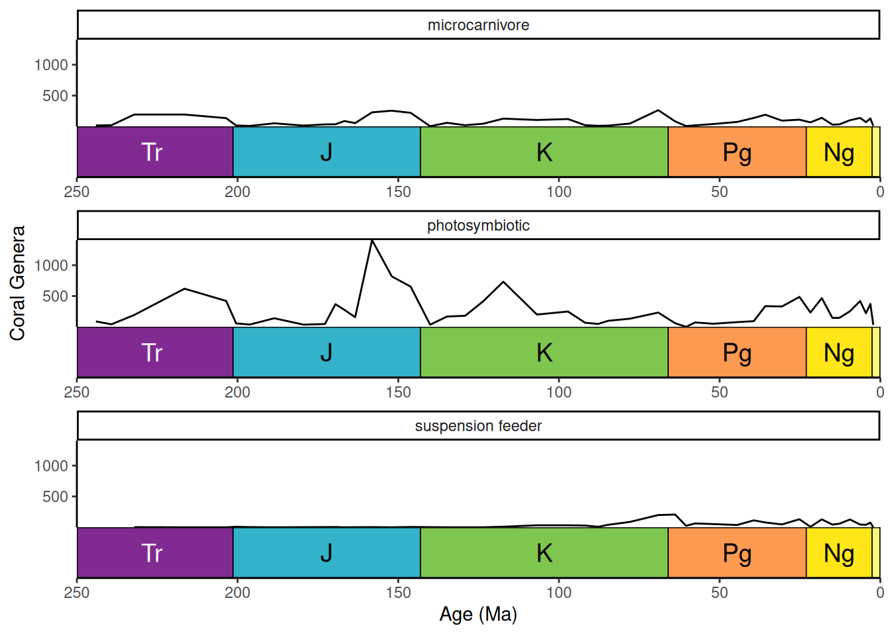
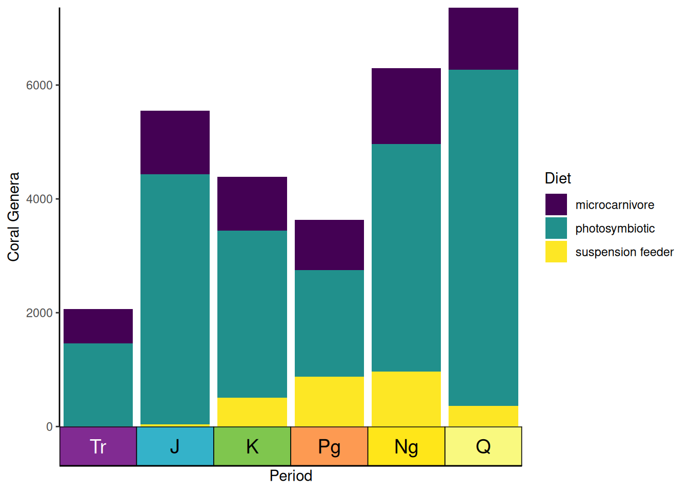
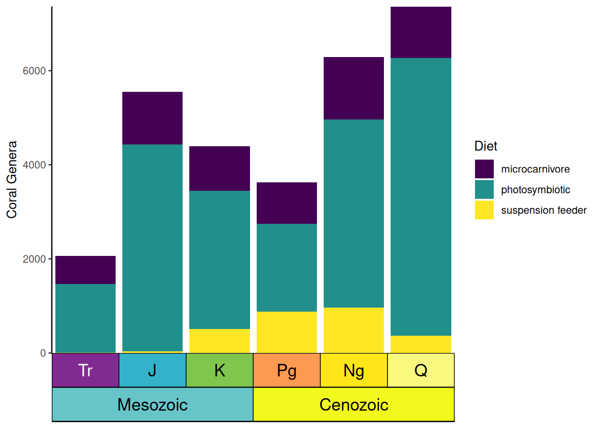
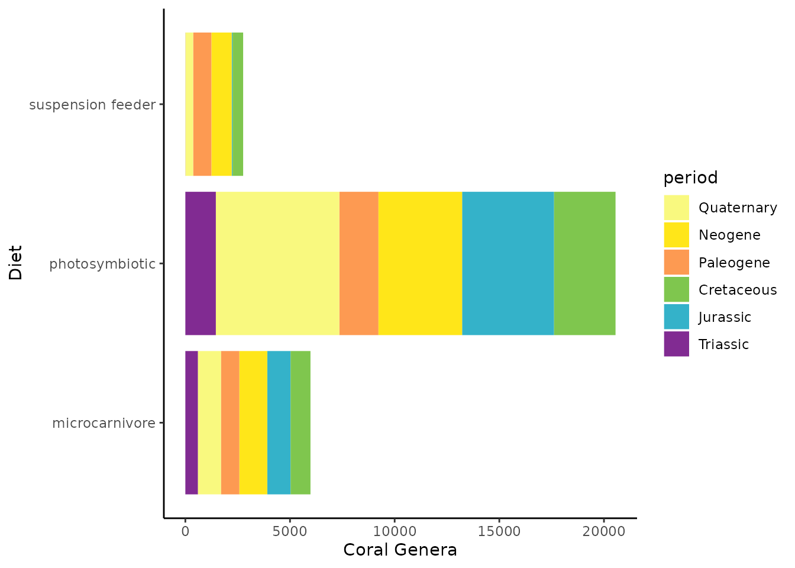

The main function of deeptime is
coord_geo(), which functions just like
coord_trans() from ggplot2. You can use this
function to add highly customizable timescales to a wide variety of
ggplots. Before we begin, let’s load some necessary packages first.
# Load deeptime
library(deeptime)
# Load tidyverse (includes ggplot2)
library(tidyverse)
# Load divDyn for coral data
library(divDyn)
data(corals)
# Load gsloid for oxygen isotope data
library(gsloid)Adding geological timescales
First, let’s summarize some coral data from the divDyn
package to generate a diversity curve that we’ll be able to plot:
# this is not a proper diversity curve but it gets the point across
coral_div <- corals %>% filter(stage != "") %>%
group_by(period, stage) %>%
summarise(n = n()) %>%
mutate(stage_age = (stages$max_age[match(stage, stages$name)] +
stages$min_age[match(stage, stages$name)])/2)Now, we can plot the data and add a geological timescale. The default
behavior is to add the ICS periods to the bottom axis. The data used for
this is included in the package (?periods) along with data
for ?eons, ?stages, ?epochs, and
?eras. Note that the function assumes that age is
decreasing towards the present.
ggplot(coral_div) +
geom_line(aes(x = stage_age, y = n)) +
scale_x_reverse("Age (Ma)") +
ylab("Coral Genera") +
coord_geo(xlim = c(250, 0), ylim = c(0, 1700)) +
theme_classic()
Scales on other axes
You can add the timescale to whichever axis you’d like by setting the
pos argument. For example, pos = "left" can be
used to put the timescale on the left axis. Also, note that we’re using
the “Geomagnetic Polarity Chron” timescale here. This is one of more
than 35 regional and global timescales that are available through
deeptime from the Macrostrat
database (see get_scale_data()).
ggplot(lisiecki2005) +
geom_line(aes(x = d18O, y = Time/1000), orientation = "y") +
scale_y_reverse("Time (Ma)") +
scale_x_reverse() +
coord_geo(dat = "Geomagnetic Polarity Chron", xlim = c(6, 2), ylim = c(6, 0),
pos = "left", rot = 90) +
theme_classic()
Add multiple timescales
You can also add multiple timescales by providing a list for
pos. Other arguments can be lists or single values (either
of which will be recycled if necessary). In this case we are adding the
“Geomagnetic Polarity Chron” timescale to the left axis and the
“Planktic foraminiferal Primary Biozones” timescale to the right
axis.
# uses the oxygen isotope data from above
ggplot(lisiecki2005) +
geom_line(aes(x = d18O, y = Time/1000), orientation = "y") +
scale_y_reverse("Time (Ma)") +
scale_x_reverse() +
coord_geo(dat = list("Geomagnetic Polarity Chron", "Planktic foraminiferal Primary Biozones"),
xlim = c(6, 2), ylim = c(5.5, 0), pos = list("l", "r"),
rot = 90, skip = "PL4", size = list(5, 4)) +
theme_classic()
Stack multiple scales
You can even stack multiple timescales on the same side. Scales are added from the inside to the outside. Here we are stacking periods and eras.
# uses the coral diversity data from above
ggplot(coral_div) +
geom_line(aes(x = stage_age, y = n)) +
scale_x_reverse("Age (Ma)") +
ylab("Coral Genera") +
coord_geo(dat = list("periods", "eras"), xlim = c(250, 0), ylim = c(0, 1700),
pos = list("b", "b"), abbrv = list(TRUE, FALSE)) +
theme_classic()
Timescales and faceted plots
coord_geo() synergizes well with faceted plots. You can
change on which facets the timescale is plotted by changing the
scales argument in facet_wrap(). The default
behavior is to only include the timescale on the bottom-most panel. This
behavior works similarly with facet_grid().
# uses the coral occurrence data from above
coral_div_diet <- corals %>% filter(stage != "") %>%
group_by(diet, stage) %>%
summarise(n = n()) %>%
mutate(stage_age = (stages$max_age[match(stage, stages$name)] +
stages$min_age[match(stage, stages$name)])/2)
ggplot(coral_div_diet) +
geom_line(aes(x = stage_age, y = n)) +
scale_x_reverse("Age (Ma)") +
ylab("Coral Genera") +
coord_geo(xlim = c(250, 0)) +
theme_classic() +
facet_wrap(~diet, nrow = 3)
By specifying scales = "free_x", you can add a
geological time scale to each panel.
ggplot(coral_div_diet) +
geom_line(aes(x = stage_age, y = n)) +
scale_x_reverse("Age (Ma)") +
ylab("Coral Genera") +
coord_geo(xlim = c(250, 0)) +
theme_classic() +
facet_wrap(~diet, nrow = 3, scales = "free_x")
Resize labels to fit inside interval rectangles
coord_geo() can use the ggfittext package
to resize the interval labels. This can be enabled by setting
size to "auto". Additional arguments can be
passed to ggfittext::geom_fit_text() as a list using the
fittext_args argument.
ggplot(coral_div) +
geom_line(aes(x = stage_age, y = n)) +
scale_x_reverse("Age (Ma)") +
ylab("Coral Genera") +
coord_geo(dat = "periods", xlim = c(250, 0), ylim = c(0, 1700),
abbrv = FALSE, size = "auto", fittext_args = list(size = 20)) +
theme_classic()
Scales on discrete axes
coord_geo() will automatically detect if your axis is
discrete. The categories of the discrete axis (which can be reordered
using the limits argument of
scale_x_discrete()/scale_y_discrete()) should
match the name column of the timescale data
(dat). You can use the arguments of theme()
and scale_[x/y]_discrete() to optionally remove the labels
and tick marks.
# use the coral occurrence data from above
coral_div_dis <- corals %>% filter(period != "") %>%
group_by(diet, period) %>%
summarise(n = n()) %>%
mutate(period_age = (periods$max_age[match(period, periods$name)] +
periods$min_age[match(period, periods$name)])/2) %>%
arrange(-period_age)
ggplot(coral_div_dis) +
geom_col(aes(x = period, y = n, fill = diet)) +
scale_x_discrete("Period", limits = unique(coral_div_dis$period), labels = NULL,
expand = expansion(add = .5)) +
scale_y_continuous(expand = c(0,0)) +
scale_fill_viridis_d("Diet") +
ylab("Coral Genera") +
coord_geo(expand = TRUE, skip = NULL, abbrv = TRUE) +
theme_classic() +
theme(axis.ticks.length.x = unit(0, "lines"))
Custom discrete scales
You can also supply your own pre-discretized scale data by setting
the dat_is_discrete parameter to TRUE. Custom
scales should always have name, max_age, and
min_age columns. Optional columns include abbr
for abbreviations, color for background colors, and
lab_color for interval label colors. You can even have one
scale with auto-discretized intervals and one scale with pre-discretized
intervals.
eras_custom <- data.frame(name = c("Mesozoic", "Cenozoic"), max_age = c(0.5, 3.5),
min_age = c(3.5, 6.5), color = c("#67C5CA", "#F2F91D"))
ggplot(coral_div_dis) +
geom_col(aes(x = period, y = n, fill = diet)) +
scale_x_discrete(NULL, limits = unique(coral_div_dis$period), labels = NULL,
expand = expansion(add = .5)) +
scale_y_continuous(expand = c(0, 0)) +
scale_fill_viridis_d("Diet") +
ylab("Coral Genera") +
coord_geo(dat = list("periods", eras_custom), pos = c("b", "b"), expand = TRUE,
skip = NULL, abbrv = list(TRUE, FALSE), dat_is_discrete = list(FALSE, TRUE)) +
theme_classic() +
theme(axis.ticks.length.x = unit(0, "lines"))
Geological timescale color scales for ggplot
In addition to adding a timescale to a plot, you may also want to
color your data based on it’s age. deeptime has
scale_color_geo() and scale_fill_geo() for
this very purpose! Note that currently these scales only work with
discrete data. The default behavior is for the color/fill aesthetic
values to match the names of the intervals in dat.
ggplot(coral_div_dis, aes(x = n, y = diet, fill = period)) +
geom_col() +
scale_fill_geo(periods) +
xlab("Coral Genera") +
ylab("Diet") +
theme_classic()